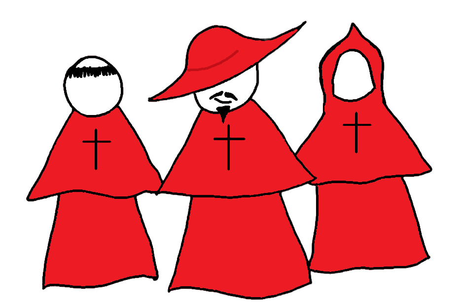

It's 1525 and the Spanish Inquisition has sent hoards of their most ardent benefactors to Navarra.
I was out practicing my spells and must now return home to hide my potions and wicked artefacts before they come search it.
Oh no! I forgot my broom!
Guess I'll have to walk... I must move carefully! If I so much as touch an inquisitioner, my magic will be felt and I will be put on trial for witchcraft!
← Arrow : Move Left
→ Arrow : Move Right
0
Game Over
Score: 0